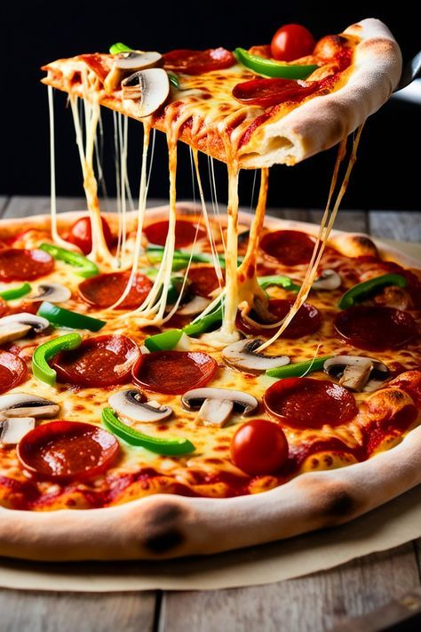
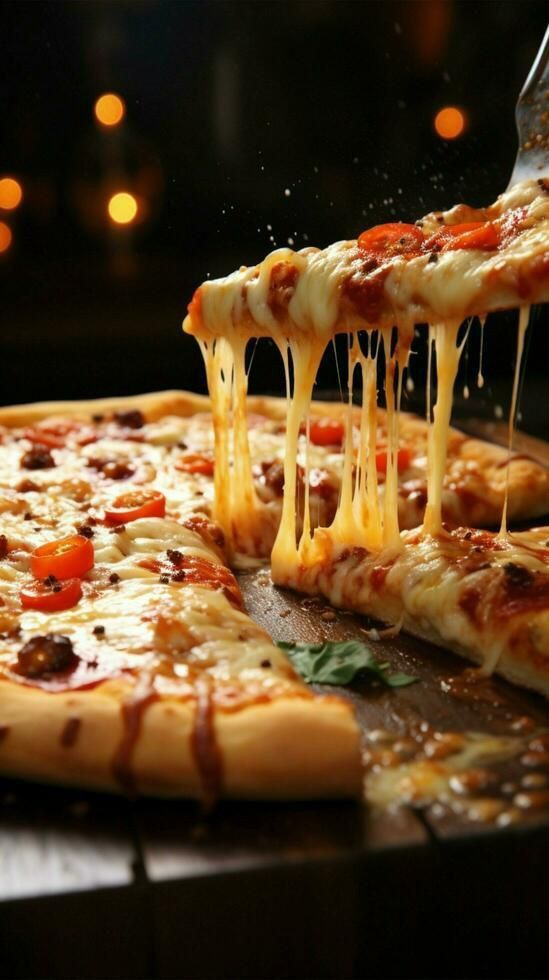

INGREDIENTS
For the Dough:
- 1/2 cup warm water
- 2 tbsp olive oil
- 1/2 tsp dry yeast
- 1/2 tsp sugar
- 1/2 tsp salt
- 2 cups all-purpose flour
For the Toppings:
- 1 red bell pepper (sliced)
- 1/2 tsp oregano
- 2 garlic cloves (minced)
- 1/2 tsp paprika
- 1 onion (thinly sliced)
- 1 tomato (chopped or pureed)
- 1 green bell pepper (sliced)
- 1/2 tsp black pepper
- Salt to taste
- 2 tbsp olive oil
- 4-6 anchovies or sliced chorizo (optional, for non-veg version)
- 5-6 black olives (optional)
Recipe

- Prepare the Dough:
- -In a bowl, mix flour, salt, sugar, and yeast.
- -Add warm water and olive oil, then knead into a soft dough.
- -Cover and let it rest for 1 hour until it doubles in size.
- Roast the Vegetables:
- -Preheat oven to 200°C (400°F).
- -Toss bell peppers, onions, and garlic with olive oil, salt, paprika, and oregano.
- -Roast for 15-20 minutes until slightly caramelized.
- Roll and Assemble
- -Roll out the dough into a thin rectangle or circle.
- -Spread pureed tomato over the dough as a base.
- -Add roasted vegetables evenly on top.
- -Arrange anchovies, chorizo, or olives if using.
- Bake the Pizza
- -Bake at 200°C (400°F) for 20-25 minutes until the edges are golden and crispy.
- -Drizzle with extra olive oil before serving.
- Serving Suggestions:
- -Serve warm with a side of aioli or garlic sauce.
- -Pair with Spanish wine or a cold beer.